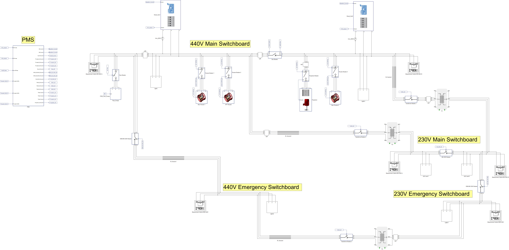
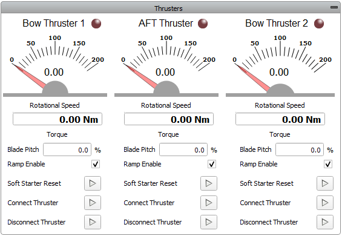
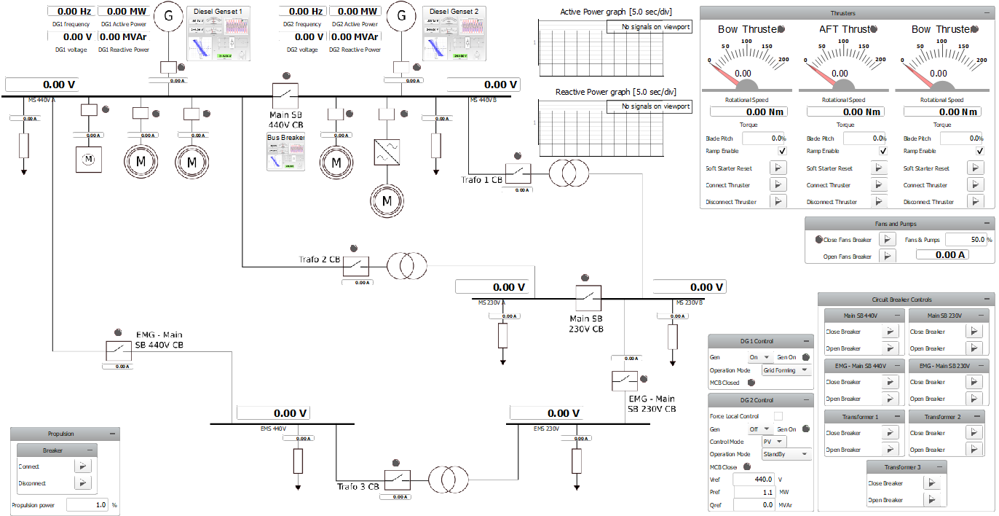
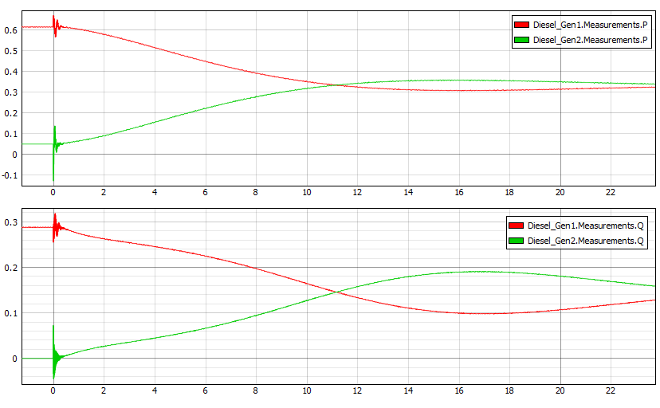
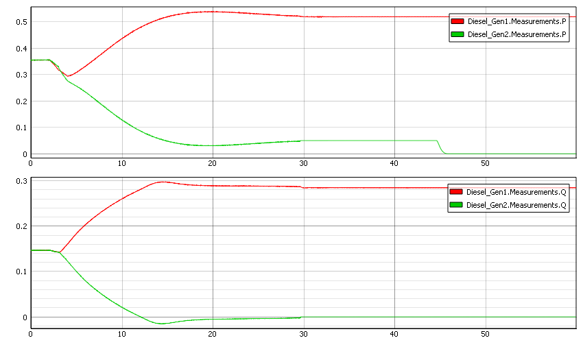
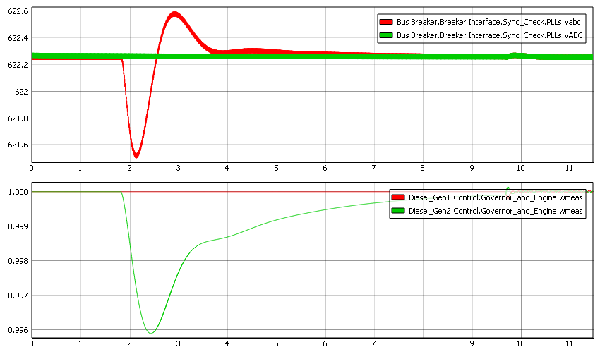
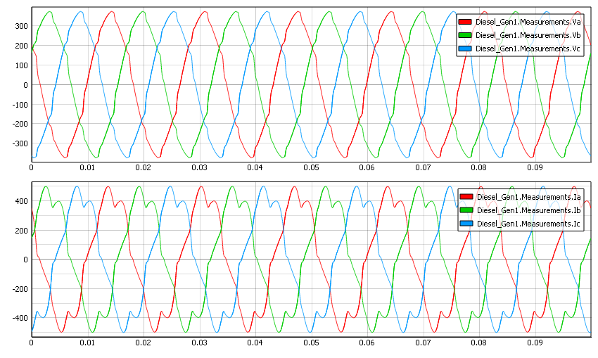

Shipboard PMS
Demonstration of the functionality and normal operation of a Shipboard Power Management System (PMS)
Introduction
This marine microgrid model demonstrates an example of a Shipboard Power Management System (PMS) and its several functions. The ship’s main power supply comes from two Diesel Gensets (DG), which feed into several key groups of loads in the model: constant loads (e.g. the Lights and Auxiliary (AUX) loads), variable loads (e.g. Fans & Pumps), and the motor loads (propulsion and thruster). The microgrid consists of multiple buses that are mutually connected with bus breakers, and where some parts are implemented as RL sections. The marine microgrid can be divided into two sections with different voltage levels – 230 V and 440 V – which are connected via three transformers (Figure 1).

Model description
The power supply for this microgrid comes from DG1 and DG2, where the nominal power of each generator is 2.69 MW, resulting in up to 5.38 MW combined. Both DGs receive commands either from the PMS or manually from the SCADA panel.
Commands to the DGs from the SCADA, (such as turning the generators on and off, providing reference active or reactive power, etc.) can be conducted either from root panel or from DG’s subpanels. Operating from the DG subpanel gives a larger variety of commands as well as insight in the DG behavior.
To manage the power flow manually, check the Force Local Control checkbox in the DG2 Control widget. This prevents the PMS from overriding commands given to DG2.
Loads are implemented in either variable form or constant form. The Lights and AUX Loads are considered constant loads, which are placed in various places of the model.
Variable loads
Fans pumps are implemented as variable RL loads using time varying components. They can be enabled or disabled by closing or opening the breaker in the Fans and Pumps group widget. Also, the total power that the Fans and Pumps consume can be set in the same widget, as measured by percentage of total load.
Thrusters are modeled as VBR (Voltage Behind Reactance) induction machines with a mechanical solver in the C function and a Soft Starter between it and the busbar. Control of the thrusters is conducted from the SCADA panel. If Soft Starter reset is not initiated, then during the next thruster startup, full voltage will be immediately conducted through the Soft Starter. This is because the Soft Starter is modeled as an ideal transformer whose turns ratio changes during the startup, so if the reset is not initiated than its turns ratio will stay 1:1. By changing the Blade Pitch you can load the motor with a given percentage of nominal torque, while Ramp Enable will limit the rate of change in torque given to the machine.

The propulsion unit is composed of a Passive Rectifier and a Variable Resistor (controlled by signal processing). This is the only unit that contains a converter-based component. These form an abstraction of a two-level motor drive and an induction motor.
Simulation
This application comes with a pre-built SCADA panel shown in Figure 3. It offers the most essential user interface elements (widgets) to monitor and interact with the simulation in runtime, allowing you to further customize it freely.

The purpose of PMS is to control the generators and the breaker in a way that enables power sharing as well as prevention of DG overload. The PMS measures the active and reactive power of the DGs, the states of the DG breakers, and the state and the measured and calculated synchronization parameters of the Main SB 440 V CB breaker. Based on the data received, the system decides on what commands to give to DG1, DG2, and the Main SB 440 V CB.
The PMS monitors the power output by DG1, and if it exceeds 1.61 MW for a sufficient time period, the system starts DG2. Soon after DG2 is on and connected to the busbar, the PMS will start the process of equalizing the power output of DG1 and DG2 until equilibrium is reached. If the joint power output of both DGs falls below 1.75 MW for a sufficient time period, the PMS will command the second DG to turn off. The difference in power demand between when DG2 is off and on is from the additional power demand caused by the snubber losses from operating DG2.
To observe the PMS in operation, DG1 will have to be turned on manually and set to Grid forming mode. Only the thrusters and propulsion are loads that can sufficiently increase the total power consumed by the system to trigger the PMS to start DG2. Connecting the thrusters is followed by large spike in the power consumed by the system (Figure 4); the amplitude of this spike depends on if the Soft Starter was active or not during startup. These spikes will not induce the PMS to turn on the second generator, since they cycle faster than the minimum time required for the PMS to request DG2 to respond to a power shortage.
After connecting and setting up the loads to sufficient values that the combined demand exceeds the power threshold, the PMS will turn on DG2, connect it to the busbar, and start the process of power sharing. This includes the process of equalizing the power output of both DGs, which can be observed in the Active and reactive power widgets, where the PMS gives the same reference Active and reactive power to both generators (Figure 4).

If we lower the power consumed by the system, the PMS will turn off the DG2, and leave only DG1 working. Before turning off DG2 it will de-load the power from DG2 and increase the power output of DG1.

The PMS is also in charge of synchronizing and closing the Main SB 440 V CB. To observe this process, both DGs must be turned on and connected to their side of the busbar while the breaker is open. Afterwards, the PMS will initiate the process of synchronization: when phase difference and voltage difference from both sides of the contactor fall within a given range, breaker will receive a signal to close.

If a three-phase rectifier is connected to the busbar, harmonics will be introduced in the grid, and their impact on the grid will be according to the propulsion load. Power consumed by propulsion is controlled in SCADA by entering its percentage of nominal load.

Test automation
We don’t have a test automation for this example yet. Let us know if you wish to contribute and we will gladly have you signed on the application note!
Example requirements
Table 1 provides detailed information about the file locations and hardware requirements for running the model in real-time, followed by the HIL device resource utilization when running the model using this minimal hardware configuration. This information is provided to help you with running and customizing the model as you see fit.
| Files | |
|---|---|
| Typhoon HIL files | examples\models\marine power systems\shipboard power shipboard power.tse shipboard power.cus |
| Minimum hardware requirements | |
| No. of HIL devices | 1 |
| HIL device model | HIL604 |
| Device configuration | 1 |
| HIL device resource utilization | |
| No. of processing cores | 5 |
| Max. matrix memory utilization | 78.98% (core0) 22.49% (core1) 43.9% (core2) 11.57% (core3) 32.89% (core4) |
| Max. time slot utilization | 51.25% (core0) 36.72% (core1) 36.88% (core2) 18.12% (core3) 10.16% (core4) |
| Simulation step, electrical | 4 µs |
| Execution rate, signal processing | Multirate (100 µs, 300 µs, 6 ms) |
Authors
[1] Dimitrije Jelic